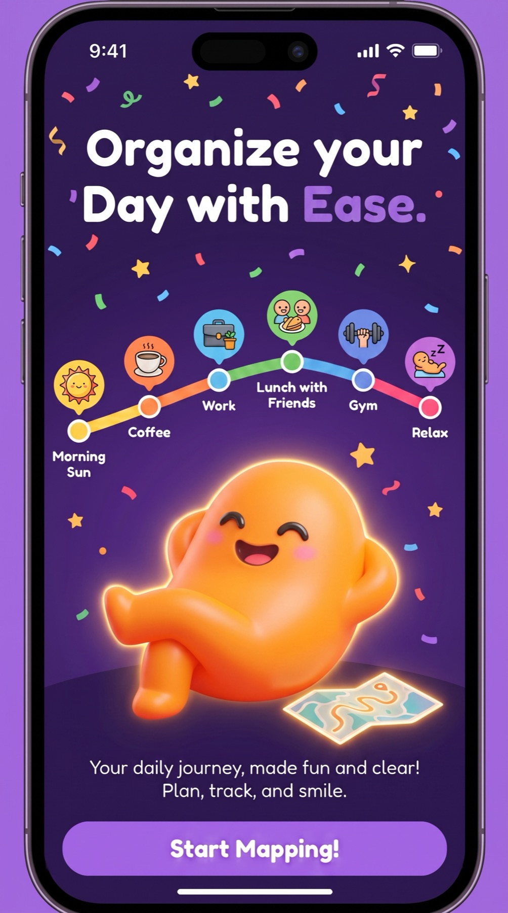

Get it out
Capture everything without needing to organize it perfectly first.
Brain dump to tasks app
Dump the thoughts before they scatter. Daymapr helps turn them into clear tasks, priorities, reminders, and next steps.


Capture everything without needing to organize it perfectly first.
Turn vague thoughts into tasks you can actually start.
Move important tasks into your day, reminders, habits, or focus time.

Capture the chaos
Daymapr is made for the moment when your head has ten tabs open. Capture the brain dump, then turn the useful parts into real tasks with priority and time.

Daymapr
Turn brain dumps into a day you can actually move through.